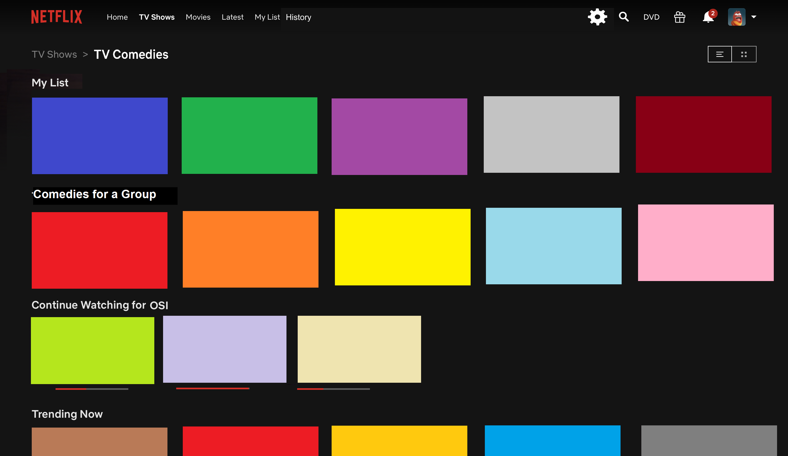

Design Focus
Making Entertainment Even More Enjoyable.
Netflix.com has been a widely used platform for virtual entertainment, especially during this era of quarentine. It's easy-to-use features allows you to select TV shows, movies, and much more at the tip of your finger. With the multidude of Netflix viewing platforms, this site will discuss design issues among it's web-based source. The clients and audience include everyone who watches TV shows and movies from online sources. Continue for more information.
When asked, participants said they enjoyed the:
- Accessibilty of Movies and TV Shows
- New Show Recommendations
- New Profile Feature
User Personas
Osinachi Nwosu
Avid Netflix Binger
Osi is a high school student (age 17) currently living in a period of quarantine. With the COVID-19 season, she enjoys binge-watching Netflix shows and considers herself a pro when it comes to selecting shows. She is a Nigerian-American and loves watching international shows such as K-Dramas, Nollywood films, and much more. She loves rewatching shows on her free time and is based in West Palm Beach, Fl.
Psuedo Individual
Horror-Fan
Loves watching horror films and nothing else. Sometimes will watch shows with friends, which ruins his algorithm ☹.
Psuedo Individual
Workaholic
Always adds shows to her Netflix list with the intent to watch them eventually, but never has time. Occassionally does watch the shows in her list after a while, but list may be cluttered.
Tasks
Click on each task number for details on how Osinachi was able to use this site. These have been recreated for demonstration purposes.
Task 1
Where do you go when you first open the app?
Task 2
Demonstrate how you would find shows you've finished watching.
Task 3
Could you demonstrate a TV Show that has new episodes?
Task 4
How would you and a group of friends pick a movie to watch on Netflix?
Task 5
How do you choose a new show to watch?
Sequential Model
Used to track the process the user either attempted or completed in the contextual inquriy phase.
Prototype
View Prototype Video Made PowerPoint Here
Evaluation
Click each section to see the improvements made on the breakdowns. All personas are for Osinachi N. unless mentioned otherwise.
-
Breakdown Task 1: Time-Consuming Sifting & Movie Auto-Play
With this new frame, users can click on the edit cog in the top-right corner to rearrage their homescreen and place movie rows they typically look for in the near the top of their Home tab. Movie auto-play is also now disabled. When clicking on a movie, you are taken directly to the drop down to find more information regarding the movie.

-
Breakdown Task 2: Disorganized "My List" category and Finding "History"
The "My List" tab has been modfied to have catergories. You can edit categories, delete categories, move categories around, share categories with friends. You can sort categories by date added, genre, default, etc. Default allows for your own categorical selection (for Osinachi N. and Persona 3). A history tab has also been added, so finished movies are added to your history. You can also sort through this tab.

-
Breakdown Task 3: Keeping Up With New Episodes
History tab has a "New Episodes" distinction on watched movies with new episodes. You can also create a "New Episodes" list to stay on the watch for upcoming episodes.
-
Breakdown Task 4: Disorganized categories focused on user's own suggestions
Creating a "Group Movies" or "Group TV Shows" section under each tab in TV Shows or Movies so this doesn't mess up a user's algorithm (Persona 2). 
-
Breakdown Task 5: Movie Auto-Play & Ratings
The number of thumbs up and thumbs down is displayed in the rating. The trailer is moved up for easier access. IMDB ratings are displayed besides the movie, if possible. Auto-play is disabled, so the drop-down is the first screen to appear.